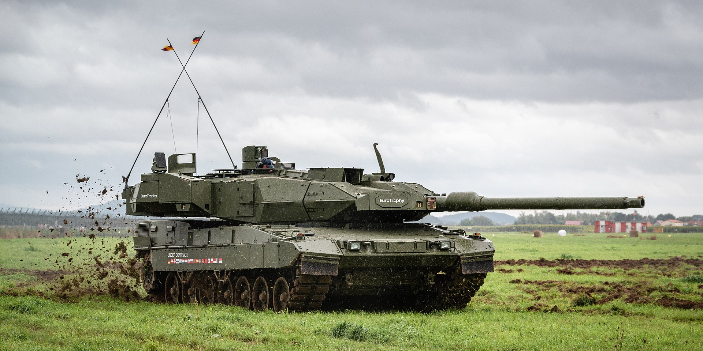
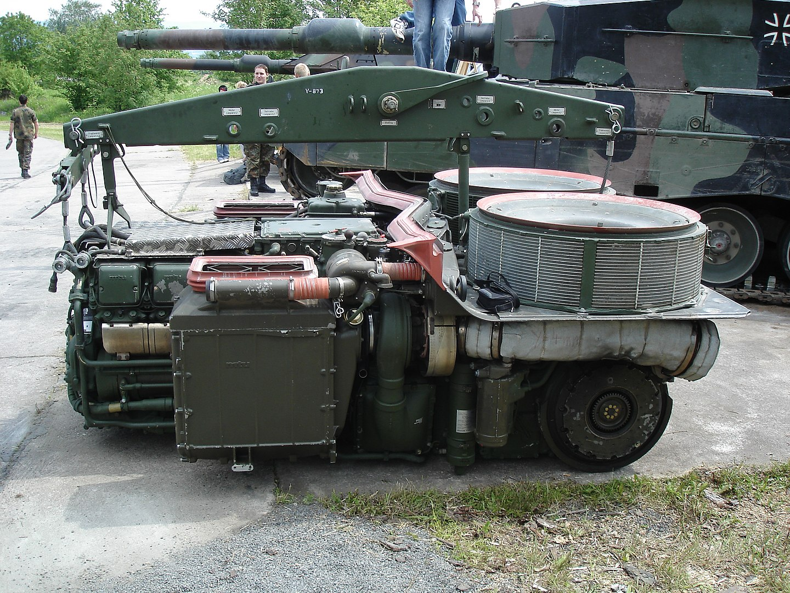
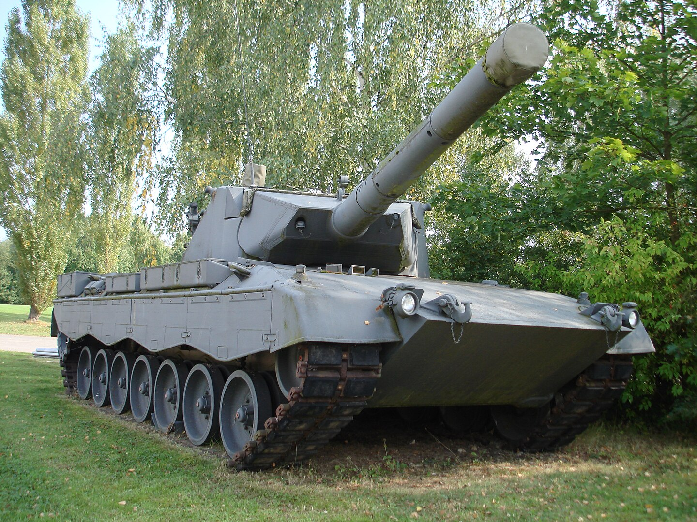
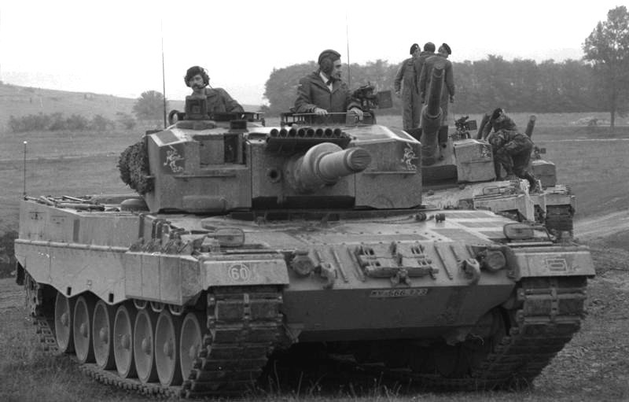
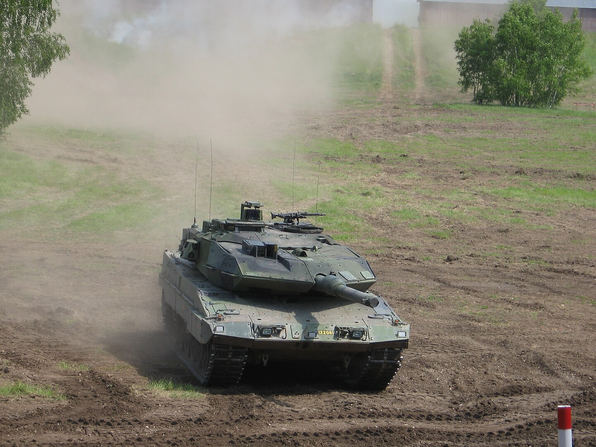
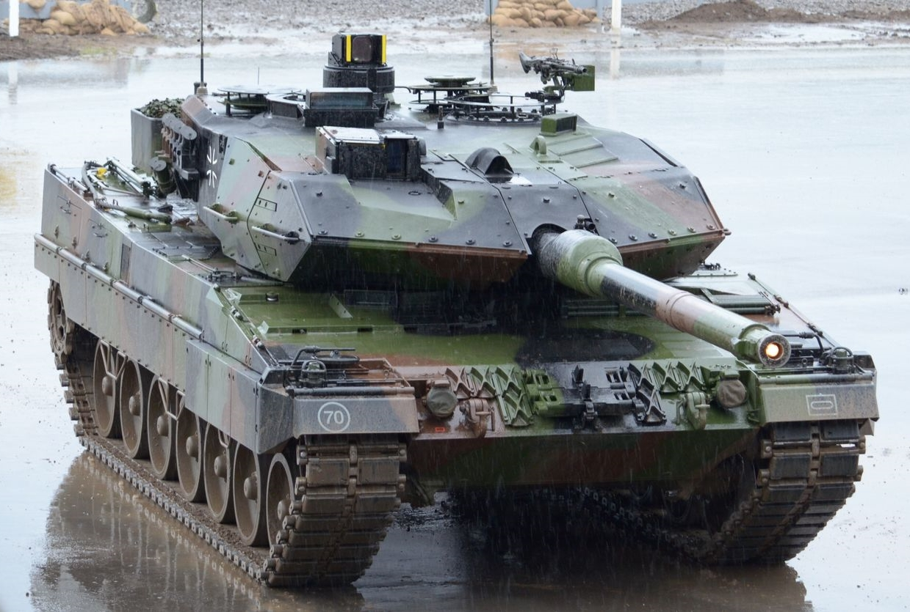

Leopard 2
Hімецький основний бойовий танк третього покоління. Розроблений компанією Krauss-Maffei у 1970-х роках, надійшов на озброєння в 1979 році на зміну попереднього Леопарда 1 як основний танк західнонімецьких сухопутних військ.
Історія
Робота над танком Leopard 2 розпочалася ще в 1950-х роках у співпраці з Францією, але співпраця згодом припинилася. Після прийняття на озброєння Leopard 1 у 1965 році Німеччина прагнула створити покращений танк. У 1967 році було розпочато дослідження модернізації Leopard 1 під назвою "Позолочений Леопард", що передбачало використання новітніх технологій. Пізніше почалися роботи над програмою MBT-70 разом зі США, але через технічні труднощі Німеччина вийшла з проєкту в 1969 році. Розробка продовжилася на основі німецьких прототипів Keiler, що привело до створення танка Leopard 2. У 1970-х було побудовано кілька прототипів для тестування нових технологій. Паралельно велося співробітництво зі США, щоб досягти уніфікації з американським танком XM1 (майбутній Abrams), але зрештою Leopard 2 не був прийнятий на озброєння в США. У 1977 році Німеччина замовила 1800 танків Leopard 2, і їх серійне виробництво почалося в 1979 році. Танк отримав значні покращення в броньовому захисті, системі керування вогнем і ходовій частині. Це забезпечило йому репутацію одного з найкращих основних бойових танків свого часу

Опис танку
Корпус і броня
Основний захист танка Leopard 2 забезпечує композитна броня, що складається зі сталевих пластин різного ступеня загартування, еластичних і неметалічних матеріалів. Товщина лобової броні моделі Leopard 2A5 і вище становить до 1500 мм завдяки клиноподібним броньовим модулям. Броня захищає від бронебійних і кумулятивних снарядів, а також від старих типів танкових боєприпасів. Днище танка захищене від мін.
Озброєння
Основна зброя танка — 120 мм гладкоствольна гармата Rheinmetall, доступна у двох версіях: L44 і L55. Боєкомплект зберігається в корпусі та башті танка, із захистом від детонації. Також встановлено два кулемети 7,62 мм: спарений і для зенітного вогню. Система керування вогнем дозволяє уражати рухомі цілі на відстані до 5000 метрів.
Двигун і мобільність
Танк оснащений дизельним двигуном MTU MB 873 потужністю 1500 к.с., що дозволяє розвивати швидкість до 68 км/год. Дальність ходу складає до 500 км. Завдяки торсіонній підвісці та захищеним гусеницям Leopard 2 є одним із наймобільніших танків.
Модифікації
Leopard 2A0 – базова версія танка, вироблена з 1979 по 1982 (380 машин). Основне обладнання включає електро-гідравлічний стабілізатор, комп'ютер керування вогнем, лазерний далекомір і перископ EMES 15. 200 машин мали підсилювач низького освітлення замість тепловізора.
Leopard 2A1 – друге покоління з тепловізійним прицілом, новою боєукладкою та зміненими паливними баками (450 машин).
Leopard 2A2 – модернізація першої партії танків до стандартів A1/A3 з установкою тепловізорів і покращеним захистом.
Leopard 2A3 – оснащений новими цифровими радіостанціями SEM80/90 (300 машин, 1984–1985).
Leopard 2A4 – найпоширеніша версія з автоматичною системою пожежогасіння, цифровою системою контролю вогню і покращеною баштою. Вироблено понад 2000 машин, які були також експортовані.
Leopard 2A5 – модернізована версія з клиноподібною бронею, електричним керуванням башти, покращеним прицілом і підвищеною бронею.
Leopard 2CAN – канадська версія, адаптована для Афганістану з покращеним захистом і гарматою L44.
Leopard 2NG – турецьке оновлення з модульною бронею, новою оптикою і системою керування вогнем.
Leopard 2PL – польська версія з модернізованою бронею і новими прицілами.
Pz 87WE – швейцарський варіант з посиленим захистом і покращеними системами управління.
Leopard 2-140 – прототип з 140 мм гарматою для майбутніх бойових машин, але проєкт не був реалізований.